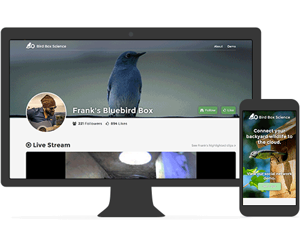
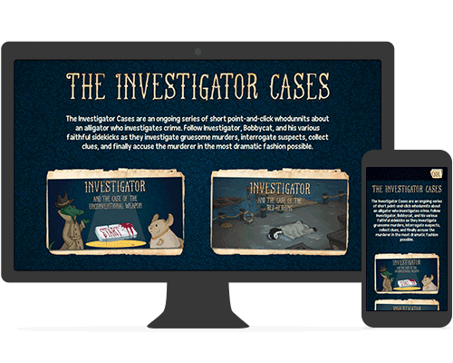

About
I'm a hybrid developer/designer, with a formal education in digital art and a childhood fascination with web development. I still occasionally have flashbacks to creating page layouts with <table>'s and IE6 workarounds. I also remember falling in love with sites such as CSS Zen Garden and the discovery of just how amazing websites could be.
I also have a wide variety of hobbies that I immensely enjoy, such as writing, photography, going on road trips to national parks, indie video games, and critiquing movies.
Recent Work

